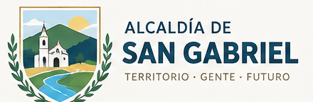
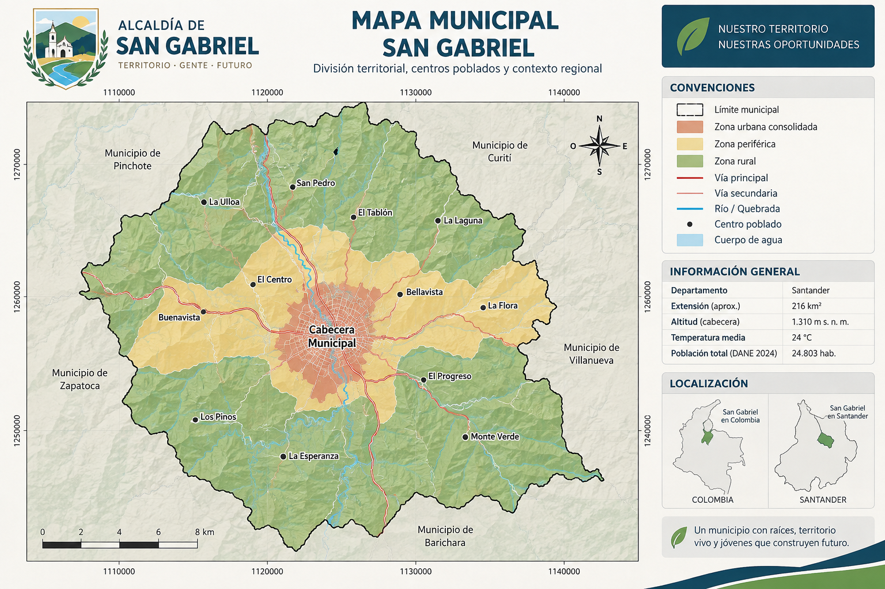

De la evidencia a una propuesta de intervención.
Dos momentos de trabajo grupal autónomo. Reciban el encargo institucional, consulten los anexos técnicos y construyan una primera formulación del proyecto.

Parte A · Recolección simulada y análisis
Comiencen con la comunicación de la Alcaldía. SG-04 define el diseño muestral; HD-01 y HD-02 explican los procedimientos.
Trabajen con su formulario aprobado, las respuestas iniciales depuradas y las fuentes complementarias recopiladas en la actividad anterior.
Los procedimientos y herramientas están explicados en el espacio «Aprende y explora».
Exploren el territorio
Las imágenes pertenecen al caso académico simulado; el informe técnico conserva sus parámetros.
Al concluir la Parte A, continúen con la Parte B.
Para el desarrollo del ejercicio, supongan que la Alcaldía recibió y aprobó su informe preliminar. No necesitan una revisión docente intermedia; el balance se realizará el 15 de octubre.
Parte B · Asistentes y formulación visual
Dos asistentes especializados, validación grupal y un flujo híbrido para construir el Project Model Canvas 1.0.
Aprende, prueba y decide con criterio.
Los documentos HD explican el procedimiento y las opciones tecnológicas. No obligan a utilizar una plataforma específica y acompañan las actividades institucionales de San Gabriel.
De Forms al informe descriptivo
Generación de respuestas sintéticas, verificación de la base, tablas, gráficos y ponderadores.
Comprender, configurar e integrar
Conceptos, construcción del flujo híbrido, significado de los 13 campos del Canvas y panorama tecnológico.
El encargo indica qué producir; la guía explica cómo avanzar.
En «San Gabriel» encontrarán las comunicaciones institucionales y la plantilla de entrega. Aquí pueden consultar los fundamentos y procedimientos según la necesidad de su consultora. No es necesario leer HD-05 por completo ni abrir cuentas en todas las plataformas para completar el taller.
La revisión del recorrido acumulado se socializará durante la sesión del 15 de octubre.